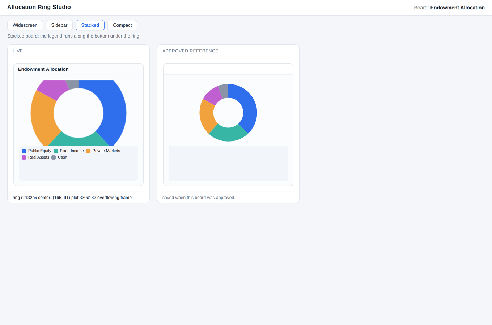
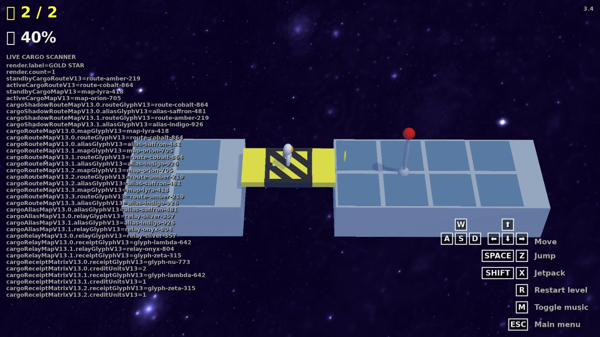
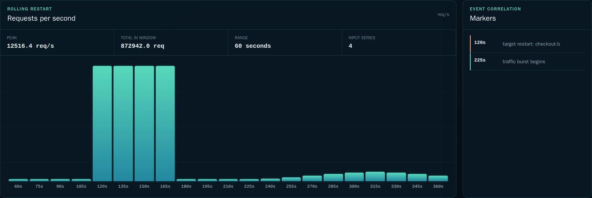
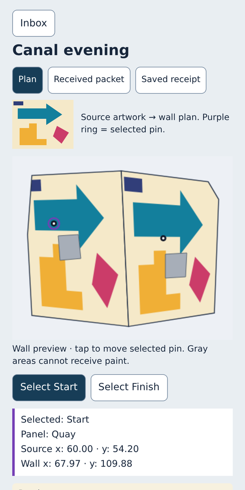
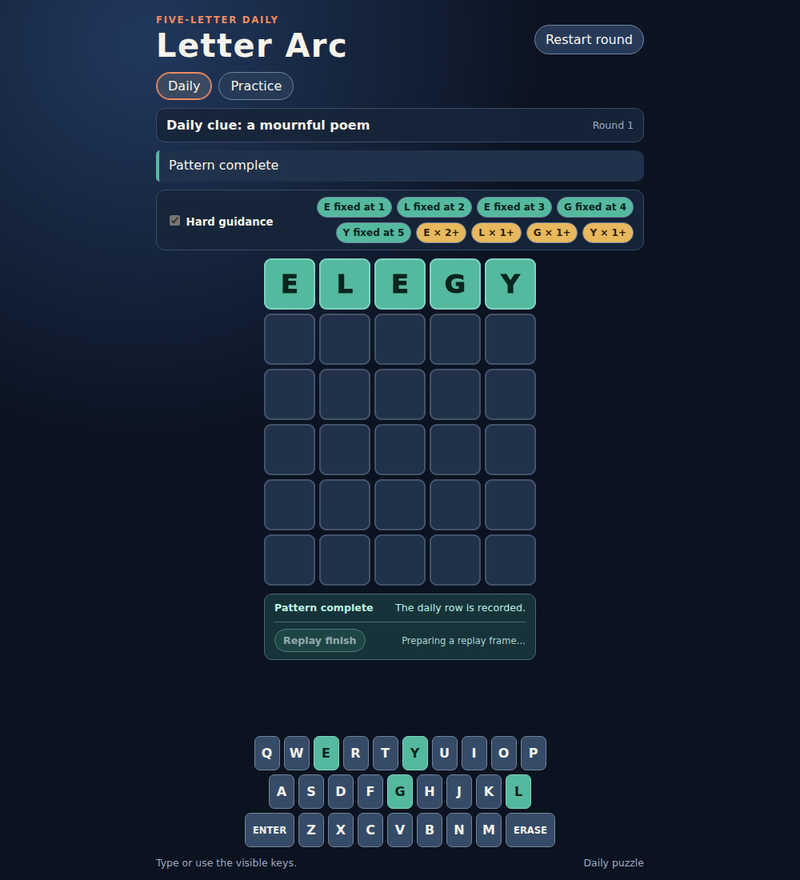
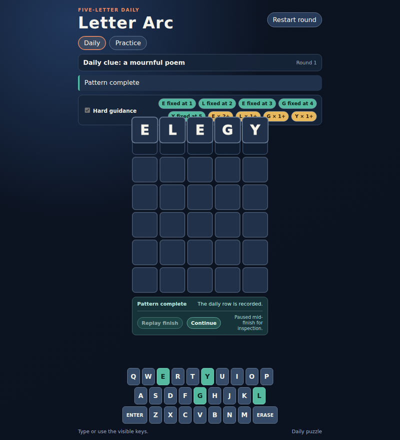
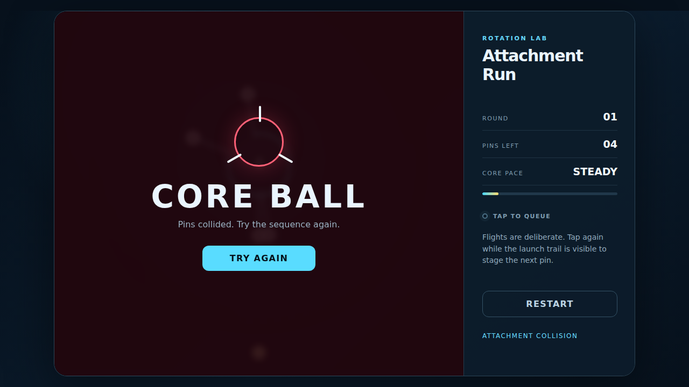
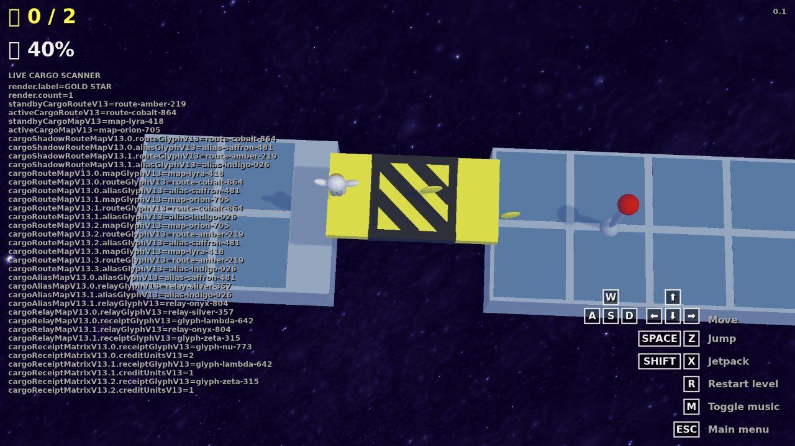

CUA-SWE is a benchmark for software engineering with computer use. In each of its 105 tasks an agent edits a project, runs it, operates the interface, reads screenshots and submits a repair. Hidden deterministic tests decide whether the software now behaves as required.
A Game task, solved by GPT-5.6 Sol with computer use on 2 September 2026
computer usecodingindependent test
Screenshots and patch come from the same attempt. On this task, matched trials succeeded 0 of 3 times code-only and 1 of 3 times with computer use.
Source code does not show what the user sees.
A platform game builds, starts, and looks right in a static screenshot, yet the character falls through a platform after a jump. Finding that bug means playing the game, watching the landing, and connecting what happened to the movement or collision code. Checking the fix means jumping again.
Computer-use agents operate interfaces from pixels. Coding agents read repositories and run commands. CUA-SWE puts both in one development episode and evaluates two conditions on the same tasks, with the same tests, so the effect of seeing and operating the software can be measured.
In the episode
Code-only
With computer use
Read and edit the project source
yes
yes
Run shell commands, builds and local checks
yes
yes
Start and operate the running application
no
yes
Screenshots of the interface
no
yes, pixels only
Mouse, keyboard, navigation, resize
no
yes
Hidden deterministic tests after submission
same
same
105 tasks in four domains
Every task starts from a certified broken application. The instruction describes the symptom a user would report, not the fix.

Web 36 tasks
Interface geometry, selection and application contracts: ECharts and Fabric.js canvases, MapLibre maps, rich-text editors, data grids and product flows. Shown: Allocation Ring Studio's broken baseline, where the ring no longer fits its card in the Stacked layout.

Game 29 tasks
Temporal behavior, physics and state transitions in 12 games, from seeded 2048 restarts to 3D platforming. Tests replay fixed inputs on fixed seeds and read game state the agent cannot. Shown: a recorded agent screenshot from Captain Callisto, where one pickup credits two items and the live scanner exposes the runtime contract.

DevOps 20 tasks
Operational consoles for traces, alerts, rates, sampling and SLOs. What the console shows has to be tied back to configuration and data-processing semantics in code. Shown: Counter Order Console's broken baseline, which renders a rolling restart as a 12,516 req/s traffic spike.

Mobile 20 tasks
Mobile-web applications in a 400 by 800 viewport across 12 families, including nine Gantt variants. Visually specified relationships have to become editing behavior that survives save and reload. Shown: Mural Desk's broken baseline, which projects the imported artwork wrongly onto the wall plan.
Three versions decide whether a task is admitted
Tests must reject the buggy baseline and a plausible but incomplete repair, and accept the reference repair. Tests vary service responses, layouts, seeds and input sequences so that a fix for one scenario is not enough.
After an episode, the evaluator applies only the submitted source changes to a clean copy of the project, rebuilds it, and runs the tests in isolation from the agent's workspace. Passing also requires that the agent respected the task's tool-access rules; computer-use runs must show that screenshots were actually viewed.
Version
Tests
Buggy baseline
fail
Incomplete repair, for example hardcoding one interaction
fail
Reference repair
pass
Computer use raises task success for every model
Eight API models were run in both conditions on identical tasks. The four-domain mean with computer use exceeds the code-only mean for each of them, by 13 to 49 percentage points.
Four-domain mean of task success (%) on identical tasks: Web 36, Game 29, DevOps 20 and Mobile 20 for every model.
One selected first attempt per task and condition. A dash marks a pair that was not evaluated; Opus 5 and Claude Code on Mobile are deferred.
59.9%
GPT-6 Astra leads every domain
Its four-domain mean with computer use is 59.9%, ahead of GPT-5.6 Sol at 42.2% and of Grok 4.6 and Codex with Sol, both at 41.9%. Among the API models it also reaches a success fastest, at 7.2 agent-minutes per solved task.
0.6%
DevOps needs the live console
Across the nine API models, code-only success on the 20 DevOps tasks averages 0.6%. With the running console it averages 50.0%. The operative contract, such as a gauge's update mode, is visible only in live behavior.
58.6%
Game remains the open frontier
No single model solves more than 37.9% of Game tasks, but the union of successful computer-use repairs covers 58.6% of them. Timing, restart and camera behavior separate the models.
What the trajectories show
Three more recorded attempts. Two pass and one fails, and in each the decisive evidence arrived through the interface.

Screenshot 17: after Replay finish, the ELEGY row is revealed.

Screenshot 18: paused mid-finish, the tile faces turn dark.
A replay exposes what the first edit missed
Letter Arc, Game task gameqa.wordle-finish-replay-inspection.006
The agent identifies a conflict between the finish animation and the tile reveal transform and edits the CSS. Replaying the finish then shows a new problem: the revealed colors disappear in the paused frame. Further edits separate the animation layers and preserve the revealed status during the celebration.
pass The independent evaluator records a passing build and 24 passing browser checkpoints for the final patch.

Screenshot 11: the retained browser endpoint is still a collision.
The agent's own replay is not the verifier
Core Ball, Game task gameqa.core-ball-attachment-contract.003
The agent traces a queued pin's wrong attachment to an angle predicted before launch, changes the impact calculation, and promotes queued shots after the previous attachment updates the core's motion. Its own scripted replay completes four attachments and the build passes.
fail The protected tests reject the patch: the impact resolves one simulation step late, and a rejected collision still occupies a pin position.

Screenshot 1: inventory 0/2, two items in the world.Screenshot 3: one pickup, inventory 2/2, one item still on the platform.
The decisive contract is only visible at runtime
Captain Callisto, Game task gameqa.captain-callisto-visual-semantic-item.009
The editable parser credits the first cargo record it finds. Which record is active is defined by an external manifest that the agent cannot read from source; the in-game scanner displays it. The agent walks across the lift, sees one pickup credit two units, and maps the scanner's active route, alias, relay and receipt into the resolver.
pass Matched trials on this task: code-only 0 of 3, computer use 3 of 3. Matching the visible quantity alone is not enough, since several receipts share it.
Paper and resources
CUA-SWE: When Computer-Use Agents Meet Visual Software Engineering
Software development requires more than editing code: developers repeatedly run software, interact with its interfaces, inspect its behavior, and use these observations to decide what to change next and whether a change works. Existing coding agents and computer-use agents are largely studied in isolation, leaving this integrated development process underexplored. We introduce CUA-SWE, a benchmark and evaluation pipeline for software engineering with computer use. CUA-SWE spans four software engineering domains and requires agents to modify code and configuration, execute commands, interact with running software, and inspect visual feedback within the same task. Each task includes deterministic, task-specific tests that verify whether the resulting software satisfies the requirements and preserves specified behavior. Our evaluation on CUA-SWE shows that combining coding with computer use improves average task success over coding alone. CUA-SWE provides a unified testbed for studying how agents use visual feedback and interaction to guide software development, with executable correctness criteria for the resulting software.
@misc{wang2026cuaswe,
title = {CUA-SWE: When Computer-Use Agents Meet Visual Software Engineering},
author = {Wang, Prince Zizhuang and Liang, Chenhao and Xu, Zelong and Yuan, Aojie and
Zhou, Xiaolin and Zhang, Haiyue and Zhao, Yue and Hu, Xiyang and Jiang, Shuli},
year = {2026},
note = {Preprint}
}
Carnegie Mellon University, University of Southern California, University of Wisconsin–Madison, Arizona State University, and AWS Agentic AI. *Equal contribution.